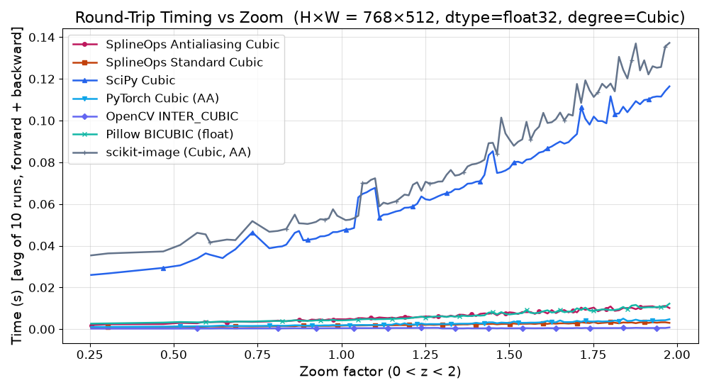
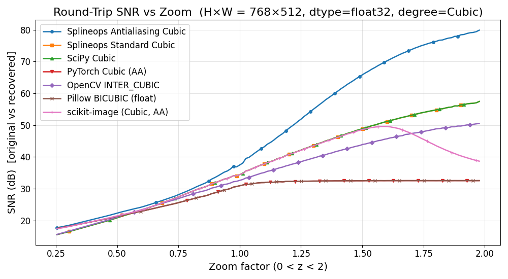
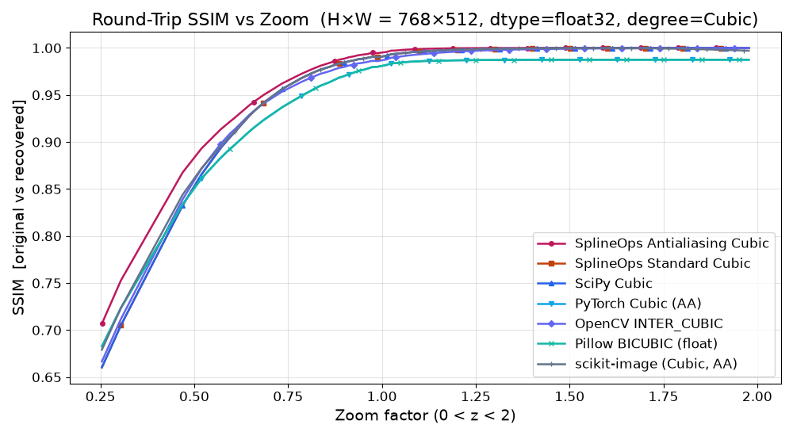
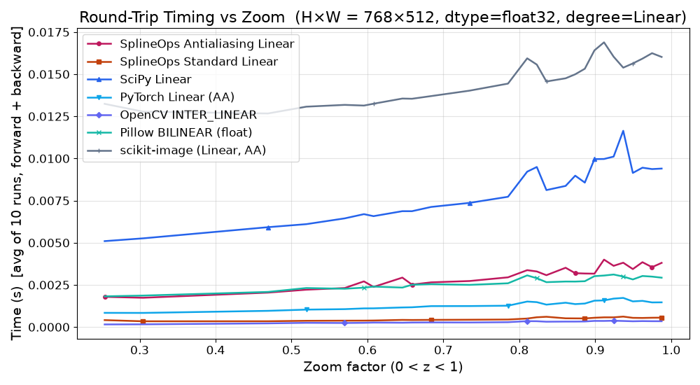
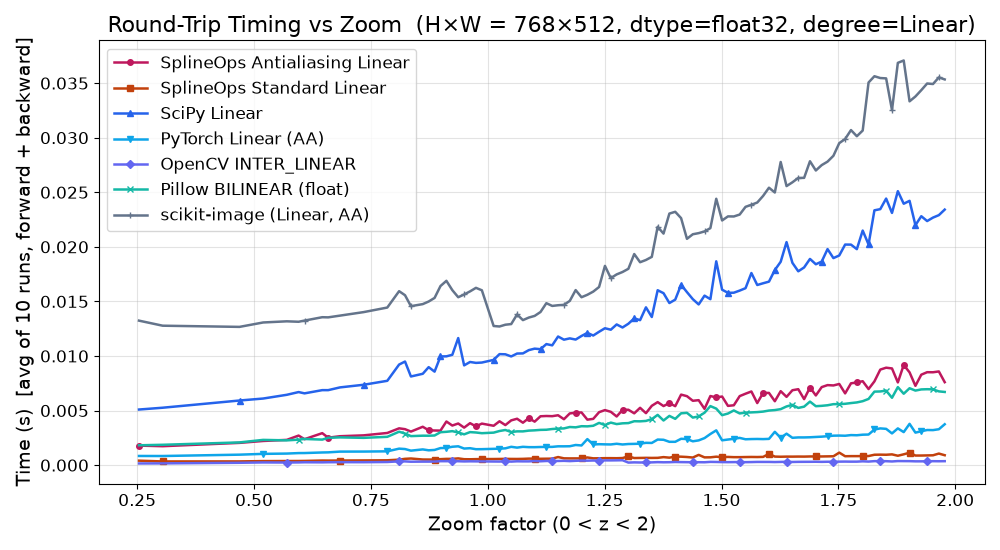
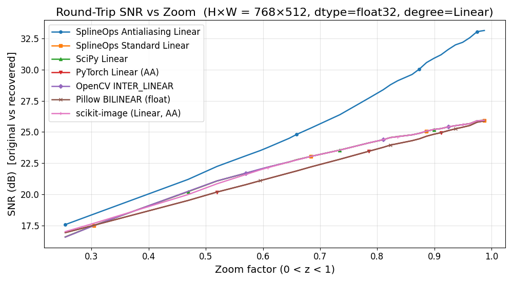
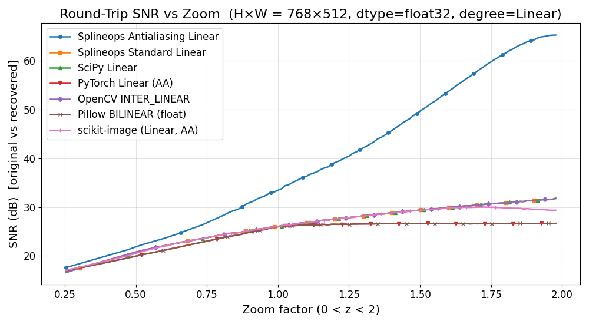
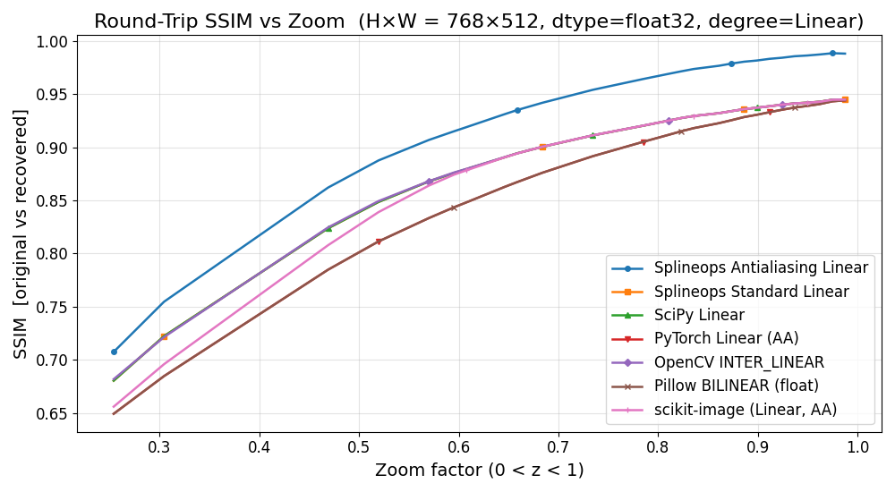
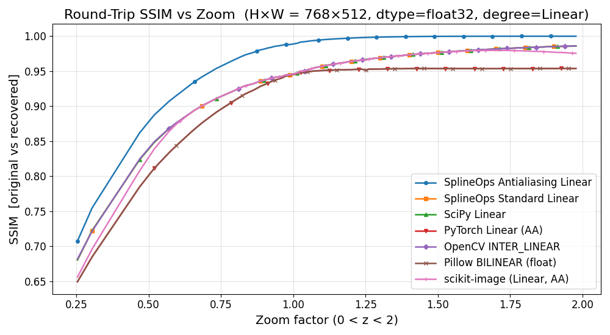

Benchmarking Plot#
This example performs a 1D sweep of zoom factors and evaluates how different 2D interpolation / downsampling methods behave in terms of
round-trip runtime (downsample then upsample back to the original size),
round-trip SNR between the original and the recovered image,
round-trip SSIM between the original and the recovered image.
In plain language:
SNR (signal-to-noise ratio) tells you how much error was introduced by the round-trip. Higher SNR means the recovered image is closer to the original (less “noise” added by the resampling).
SSIM (structural similarity index) measures how similar the structure of the recovered image is to the original, focusing on local patterns of intensity (edges, textures, contrasts). Values close to 1 mean the images look very similar; values closer to 0 mean they differ a lot.
For each zoom factor \(z\), we run two resizes:
forward: original → zoomed image,
backward: zoomed → recovered image (back to the original size).
All methods are compared on exactly the same round-trip task.
We compare:
SciPy
ndimage.zoom(linear / cubic),SplineOps Standard (linear / cubic),
SplineOps Antialiasing (linear / cubic),
PyTorch bilinear / bicubic (CPU, with antialiasing),
OpenCV
INTER_LINEAR/INTER_CUBIC,Pillow BILINEAR / BICUBIC,
scikit-image
transform.resize(linear / cubic, with antialiasing enabled when downsampling).
By default, the benchmark runs in float32 for performance. You can switch to
float64 by changing the DTYPE constant below.
from __future__ import annotations
import math
import os
import time
from typing import Dict, List, Tuple, Optional
import numpy as np
import matplotlib.pyplot as plt
from urllib.request import urlopen
from PIL import Image
# Optional SciPy
try:
from scipy.ndimage import zoom as ndi_zoom
_HAS_SCIPY = True
except Exception:
_HAS_SCIPY = False
# Optional PyTorch (for comparison)
try:
import torch
import torch.nn.functional as F
_HAS_TORCH = True
except Exception:
_HAS_TORCH = False
torch = None # type: ignore[assignment]
F = None # type: ignore[assignment]
# Optional OpenCV (for comparison)
try:
import cv2
_HAS_CV2 = True
# Undo OpenCV's Qt plugin path override to avoid conflicts with Matplotlib backends
os.environ.pop("QT_QPA_PLATFORM_PLUGIN_PATH", None)
except Exception:
_HAS_CV2 = False
# Optional scikit-image (for comparison + SSIM)
try:
from skimage.transform import resize as sk_resize
from skimage.metrics import structural_similarity as sk_ssim # SSIM
_HAS_SKIMAGE = True
except Exception:
_HAS_SKIMAGE = False
sk_ssim = None # type: ignore[assignment]
# SplineOps
from splineops.resize import resize as spl_resize
try:
from splineops.utils.specs import print_runtime_context
_HAS_SPECS = True
except Exception:
print_runtime_context = None # type: ignore[assignment]
_HAS_SPECS = False
# Default storage dtype for the benchmark (change to np.float64 if desired)
DTYPE = np.float32
DTYPE_NAME = np.dtype(DTYPE).name
# Plot appearance for slide-friendly export
PLOT_FIGSIZE = (10.0, 5.5)
PLOT_TITLE_FONTSIZE = 16
PLOT_LABEL_FONTSIZE = 14
PLOT_TICK_FONTSIZE = 12
PLOT_LEGEND_FONTSIZE = 12
MARKER_SIZE = 4
LINEWIDTH = 1.8
# --- SplineOps highlight colors (match 06_benchmarking.py) ---
SPLINEOPS_CURVE_COLORS = {
"SplineOps Standard": "#C2410C",
"SplineOps Antialiasing": "#BE185D",
}
# --- Cool palette for non-SplineOps methods (avoid Matplotlib's orange/red cycle) ---
OTHER_CURVE_COLORS = {
"SciPy": "#2563EB", # blue
"PyTorch": "#0EA5E9", # sky/cyan
"OpenCV": "#6366F1", # indigo
"Pillow": "#14B8A6", # teal
"scikit-image": "#64748B", # slate
}
def _color_for_curve(name: str) -> str | None:
"""SplineOps -> warm highlight; others -> cool palette; else None."""
for prefix, col in SPLINEOPS_CURVE_COLORS.items():
if name.startswith(prefix):
return col
for prefix, col in OTHER_CURVE_COLORS.items():
if name.startswith(prefix):
return col
return None
# Show markers only on every N-th point (sparser markers).
# All methods share the same stride but use different phase offsets
# so their markers don't sit on top of each other.
MARK_EVERY_BASE = 8
# ---------------- Method toggles ----------------
# Set any of these to False to skip computing/plotting that method.
ENABLE_SCIPY = True
ENABLE_SPLINEOPS_STANDARD = True
ENABLE_SPLINEOPS_ANTIALIASING = True
ENABLE_TORCH = True
ENABLE_OPENCV = True
ENABLE_PILLOW = True
ENABLE_SKIMAGE = True
VERBOSE_PROGRESS = False # set to True if you want CLI progress printing
# ------------------------
# Small helpers
# ------------------------
def fmt_ms(seconds: float) -> str:
"""Format seconds as a short 'X.X ms' or 'X.XXX s' string."""
return f"{seconds * 1000.0:.1f} ms" if seconds < 1.0 else f"{seconds:.3f} s"
def roundtrip_size_ok(shape: Tuple[int, ...], z: float) -> bool:
"""Accept z only if H,W -> round(H*z) then back with 1/z returns original."""
if len(shape) < 2:
return False
H, W = int(shape[0]), int(shape[1])
H1 = int(round(H * z))
W1 = int(round(W * z))
if H1 <= 0 or W1 <= 0:
return False
H2 = int(round(H1 * (1.0 / z)))
W2 = int(round(W1 * (1.0 / z)))
return (H2 == H) and (W2 == W)
def snr_db(x: np.ndarray, y: np.ndarray) -> float:
"""
Compute the SNR in dB between arrays x and y:
SNR = 10 log10( sum(x^2) / sum((x - y)^2) ).
Returns +inf for a perfect match.
"""
num = float(np.sum(x * x, dtype=np.float64))
den = float(np.sum((x - y) ** 2, dtype=np.float64))
if den == 0.0:
return float("inf")
if num == 0.0:
return -float("inf")
return 10.0 * math.log10(num / den)
def average_time(run, repeats: int = 10) -> Tuple[np.ndarray, float, float]:
"""
Run `run()` multiple times and return:
(last_rec, mean_time, std_time).
`run` must be a callable with no arguments returning (rec, dt).
"""
times: List[float] = []
rec: Optional[np.ndarray] = None
for _ in range(max(1, repeats)):
rec, dt = run()
times.append(dt)
times_arr = np.asarray(times, dtype=np.float64)
mean_t = float(times_arr.mean())
sd_t = float(times_arr.std(ddof=1 if times_arr.size > 1 else 0))
assert rec is not None
return rec, mean_t, sd_t
Load and Normalize an Image#
We use a fixed Kodak test image, convert it to grayscale and normalize it to [0, 1]. All methods operate on this normalized grayscale array.
def _load_kodak_gray(url: str) -> np.ndarray:
"""
Download a Kodak image, convert to grayscale [0, 1] in DTYPE (float32).
"""
with urlopen(url, timeout=10) as resp:
img = Image.open(resp)
arr = np.asarray(img, dtype=np.float64)
if arr.ndim == 3 and arr.shape[2] >= 3:
arr01 = arr / 255.0
gray = 0.2989 * arr01[..., 0] + 0.5870 * arr01[..., 1] + 0.1140 * arr01[..., 2]
else:
vmax = float(arr.max()) or 1.0
gray = arr / vmax
return np.clip(gray, 0.0, 1.0).astype(DTYPE)
KODAK_URL = "https://r0k.us/graphics/kodak/kodak/kodim19.png"
img_gray = _load_kodak_gray(KODAK_URL)
H, W = img_gray.shape
print(f"Loaded test image: shape = {H}×{W}, dtype = {img_gray.dtype}")
Loaded test image: shape = 768×512, dtype = float32
Original Image#
For reference, we display the grayscale image that will be used throughout the benchmark.
plt.figure(figsize=(6, 6))
plt.imshow(img_gray, cmap="gray", interpolation="nearest")
plt.title("Original Grayscale Image")
plt.axis("off")
plt.tight_layout()
plt.show()
Round-trip Runners#
Each method is evaluated by a round-trip (forward + backward resize, back to the original shape).
We will run the full benchmark twice:
once for cubic interpolation,
once for linear interpolation.
def scipy_roundtrip(img: np.ndarray, z: float, degree: str) -> Tuple[np.ndarray, float]:
"""
Round-trip with SciPy ndimage.zoom using order=1 (linear) or 3 (cubic),
reflect boundary; prefilter is used only for cubic.
"""
if not _HAS_SCIPY:
raise RuntimeError("SciPy not available")
order_map = {"linear": 1, "cubic": 3}
order = order_map[degree]
need_prefilter = order >= 3
zoom_fwd = (z, z)
zoom_bwd = (1.0 / z, 1.0 / z)
t0 = time.perf_counter()
out = ndi_zoom(
img,
zoom=zoom_fwd,
order=order,
prefilter=need_prefilter,
mode="reflect",
grid_mode=False,
)
rec = ndi_zoom(
out,
zoom=zoom_bwd,
order=order,
prefilter=need_prefilter,
mode="reflect",
grid_mode=False,
)
dt = time.perf_counter() - t0
rec = np.clip(rec, 0.0, 1.0)
return rec.astype(img.dtype, copy=False), dt
def spl_roundtrip(img: np.ndarray, z: float, method: str) -> Tuple[np.ndarray, float]:
"""
SplineOps round-trip using a single preset string:
- "linear", "cubic" → Standard interpolation
- "linear-antialiasing", ... → Antialiasing (oblique projection)
"""
zoom_fwd = (z, z)
zoom_bwd = (1.0 / z, 1.0 / z)
t0 = time.perf_counter()
down = spl_resize(img, zoom_factors=zoom_fwd, method=method)
rec = spl_resize(down, zoom_factors=zoom_bwd, method=method)
dt = time.perf_counter() - t0
rec = np.clip(rec, 0.0, 1.0)
return rec.astype(img.dtype, copy=False), dt
def torch_roundtrip(img: np.ndarray, z: float, degree: str) -> Tuple[np.ndarray, float]:
"""
Round-trip using torch.nn.functional.interpolate with bilinear (linear)
or bicubic (cubic). Runs on CPU.
We enable antialiasing so that downsampling uses the antialiased path
provided by PyTorch.
"""
if not _HAS_TORCH:
raise RuntimeError("PyTorch not available")
t0 = time.perf_counter()
mode = "bilinear" if degree == "linear" else "bicubic"
arr = img
if arr.dtype == np.float32:
t_dtype = torch.float32
elif arr.dtype == np.float64:
t_dtype = torch.float64
else:
t_dtype = torch.float32
arr = arr.astype(np.float32, copy=False)
H0, W0 = arr.shape
H1 = int(round(H0 * z))
W1 = int(round(W0 * z))
# antialias=True enables the low-pass filter for downscaling;
# it has no effect when upscaling.
aa = True
x = torch.from_numpy(arr).to(t_dtype).unsqueeze(0).unsqueeze(0)
y = F.interpolate(
x,
size=(H1, W1),
mode=mode,
align_corners=False,
antialias=aa,
)
y2 = F.interpolate(
y,
size=(H0, W0),
mode=mode,
align_corners=False,
antialias=aa,
)
rec = y2[0, 0].cpu().numpy().astype(arr.dtype, copy=False)
rec = np.clip(rec, 0.0, 1.0).astype(img.dtype, copy=False)
dt = time.perf_counter() - t0
return rec, dt
def opencv_roundtrip(
img: np.ndarray, z: float, degree: str
) -> Tuple[np.ndarray, float]:
"""
Round-trip with OpenCV resize using INTER_LINEAR or INTER_CUBIC.
"""
if not _HAS_CV2:
raise RuntimeError("OpenCV not available")
interp = {
"linear": cv2.INTER_LINEAR,
"cubic": cv2.INTER_CUBIC,
}[degree]
H, W = img.shape
W1 = int(round(W * z))
H1 = int(round(H * z))
t0 = time.perf_counter()
down = cv2.resize(img, (W1, H1), interpolation=interp)
rec = cv2.resize(down, (W, H), interpolation=interp)
dt = time.perf_counter() - t0
rec = np.clip(rec, 0.0, 1.0)
return rec.astype(img.dtype, copy=False), dt
def pillow_roundtrip(img: np.ndarray, z: float, which: str) -> Tuple[np.ndarray, float]:
"""
Round-trip with Pillow's resize using BILINEAR/BICUBIC.
For 2D (grayscale) arrays, this uses a pure float32 ("F" mode) pipeline so
there is no 8-bit quantization advantage.
"""
resample_map = {
"bilinear": Image.Resampling.BILINEAR,
"bicubic": Image.Resampling.BICUBIC,
}
if which not in resample_map:
raise ValueError(f"Unsupported Pillow kernel: {which}")
resample = resample_map[which]
H, W = img.shape
W1 = int(round(W * z))
H1 = int(round(H * z))
t0 = time.perf_counter()
im = Image.fromarray(img.astype(np.float32, copy=False), mode="F")
down = im.resize((W1, H1), resample=resample)
rec_im = down.resize((W, H), resample=resample)
rec_arr = np.asarray(rec_im, dtype=np.float32)
rec_arr = np.clip(rec_arr, 0.0, 1.0).astype(img.dtype, copy=False)
dt = time.perf_counter() - t0
return rec_arr, dt
def skimage_roundtrip(
img: np.ndarray, z: float, degree: str
) -> Tuple[np.ndarray, float]:
"""
Round-trip with scikit-image.transform.resize using order=1 (linear) or
order=3 (cubic). We enable anti-aliasing when downsampling.
"""
if not _HAS_SKIMAGE:
raise RuntimeError("scikit-image not available")
order_map = {"linear": 1, "cubic": 3}
order = order_map[degree]
arr = np.asarray(img, dtype=np.float64)
H, W = arr.shape
H1 = int(round(H * z))
W1 = int(round(W * z))
# Use anti_aliasing when going to a smaller size
use_aa_down = (H1 < H) or (W1 < W)
t0 = time.perf_counter()
down = sk_resize(
arr,
(H1, W1),
order=order,
anti_aliasing=use_aa_down,
preserve_range=True,
mode="reflect",
)
# Backward: from down.shape to original shape
H2, W2 = down.shape
use_aa_back = (H2 > H) or (W2 > W) # this is usually upsampling, so AA=False
rec = sk_resize(
down,
(H, W),
order=order,
anti_aliasing=use_aa_back,
preserve_range=True,
mode="reflect",
)
dt = time.perf_counter() - t0
rec = np.clip(rec, 0.0, 1.0)
return rec.astype(img.dtype, copy=False), dt
Zoom Sweep#
We sweep zoom factors and keep only those that preserve the original image size after a forward/backward round-trip (using simple rounding).
We exclude zoom factors too close to 1.0 to avoid trivial “identity” spikes.
SAMPLES_DOWN = 80 # zoom samples in (0, 1)
SAMPLES_UP = 80 # zoom samples in (1, 2)
REPEATS = 10 # timing repetitions per (method, zoom)
NEAR_ONE_EPS = 1e-2 # exclude zoom factors with |z - 1| < NEAR_ONE_EPS
NEAR_MAX_EPS = 1e-2 # keep z at least this far from 2.0
eps = 1e-6
z_down = np.linspace(0.001, 1.0 - eps, SAMPLES_DOWN, endpoint=True, dtype=np.float64)
z_up = np.linspace(
1.0 + eps, 2.0 - NEAR_MAX_EPS, SAMPLES_UP, endpoint=True, dtype=np.float64
)
z_candidates = np.concatenate([z_down, z_up])
z_candidates = z_candidates[(z_candidates > 0.0) & (z_candidates < 2.0 - NEAR_MAX_EPS)]
z_candidates = z_candidates[np.abs(z_candidates - 1.0) > NEAR_ONE_EPS]
z_list = [float(z) for z in z_candidates if roundtrip_size_ok(img_gray.shape, float(z))]
if not z_list:
raise RuntimeError("No valid zoom factors passed the round-trip size check.")
print(
f"Accepted {len(z_list)} / {len(z_candidates)} zoom factors "
f"(down: {SAMPLES_DOWN}, up: {SAMPLES_UP}, |z-1|>{NEAR_ONE_EPS}, 2.0 excluded)."
)
Accepted 104 / 157 zoom factors (down: 80, up: 80, |z-1|>0.01, 2.0 excluded).
Method Construction#
def build_methods_for_degree(
degree: str,
) -> Tuple[Dict[str, Tuple[str, str | None]], str]:
"""
Build the METHODS dictionary for a given degree ('linear' or 'cubic').
Returns (METHODS, degree_label).
"""
assert degree in ("linear", "cubic")
degree_label = degree.title()
METHODS: Dict[str, Tuple[str, str | None]] = {}
# --- SplineOps first: Antialiasing, then Standard ---
if ENABLE_SPLINEOPS_ANTIALIASING:
METHODS[f"SplineOps Antialiasing {degree_label}"] = (
"SplineOps",
f"{degree}-antialiasing",
)
if ENABLE_SPLINEOPS_STANDARD:
METHODS[f"SplineOps Standard {degree_label}"] = (
"SplineOps",
degree,
)
# --- then the rest ---
# SciPy
if ENABLE_SCIPY and _HAS_SCIPY:
METHODS[f"SciPy {degree_label}"] = ("scipy", degree)
elif ENABLE_SCIPY:
print("[info] SciPy not found; 'SciPy' curve will be omitted.")
# PyTorch
if ENABLE_TORCH:
if _HAS_TORCH:
METHODS[f"PyTorch {degree_label} (AA)"] = ("torch", degree)
else:
print("[info] PyTorch not found; 'PyTorch' curve will be omitted.")
# OpenCV
if ENABLE_OPENCV:
if _HAS_CV2:
METHODS[f"OpenCV INTER_{degree_label.upper()}"] = ("opencv", degree)
else:
print("[info] OpenCV not found; 'OpenCV' curve will be omitted.")
# Pillow
if ENABLE_PILLOW:
if degree == "linear":
METHODS["Pillow BILINEAR (float)"] = ("pillow", "bilinear")
else:
METHODS["Pillow BICUBIC (float)"] = ("pillow", "bicubic")
# scikit-image
if ENABLE_SKIMAGE:
if _HAS_SKIMAGE:
METHODS[f"scikit-image ({degree_label}, AA)"] = ("skimage", degree)
else:
print(
"[info] scikit-image not found; 'scikit-image' curve will be omitted."
)
return METHODS, degree_label
def run_sweep_for_degree(degree: str) -> Tuple[Dict[str, Dict[str, List[float]]], str]:
"""
Run the full zoom sweep for a given degree ("linear" or "cubic") and
return (results, degree_label).
"""
METHODS, degree_label = build_methods_for_degree(degree)
# Storage for results
results: Dict[str, Dict[str, List[float]]] = {
name: {"z": [], "time": [], "time_sd": [], "snr": [], "ssim": []}
for name in METHODS
}
for idx, z in enumerate(z_list, 1):
if VERBOSE_PROGRESS:
print(f"[{degree_label:>6}] [{idx:>3}/{len(z_list)}] z={z:.5f}", end="\r")
for name, (kind, param) in METHODS.items():
if kind == "scipy":
runner = lambda z=z, deg=param: scipy_roundtrip(img_gray, z, deg) # type: ignore[arg-type]
elif kind == "SplineOps":
runner = lambda z=z, m=param: spl_roundtrip(img_gray, z, m) # type: ignore[arg-type]
elif kind == "torch":
runner = lambda z=z, deg=param: torch_roundtrip(img_gray, z, deg) # type: ignore[arg-type]
elif kind == "opencv":
runner = lambda z=z, deg=param: opencv_roundtrip(img_gray, z, deg) # type: ignore[arg-type]
elif kind == "pillow":
runner = lambda z=z, w=param: pillow_roundtrip(img_gray, z, w) # type: ignore[arg-type]
elif kind == "skimage":
runner = lambda z=z, deg=param: skimage_roundtrip(img_gray, z, deg) # type: ignore[arg-type]
else:
continue
try:
rec, t_mean, t_sd = average_time(runner, repeats=REPEATS)
except Exception as e:
# If any method fails at a particular zoom, skip that sample
print(f"\n[warn] {degree_label}: {name} failed at z={z:.5f}: {e}")
continue
s = snr_db(img_gray, rec)
# Global SSIM (grayscale)
if _HAS_SKIMAGE and sk_ssim is not None:
try:
dr = float(img_gray.max() - img_gray.min())
if dr <= 0.0:
dr = 1.0 # flat image; arbitrary but safe
ssim_val = float(sk_ssim(img_gray, rec, data_range=dr))
except Exception:
ssim_val = float("nan")
else:
ssim_val = float("nan")
results[name]["z"].append(z)
results[name]["time"].append(t_mean)
results[name]["time_sd"].append(t_sd)
results[name]["snr"].append(s)
results[name]["ssim"].append(ssim_val)
print(f"\nDone for degree={degree_label}.")
return results, degree_label
Plotting Helpers#
def _plot_timing(
results: Dict[str, Dict[str, List[float]]],
degree_label: str,
zoom_label: str = "0 < z < 2",
):
"""Timing vs zoom plot for a given degree."""
plt.figure(figsize=PLOT_FIGSIZE)
# Prepare per-method markers for accessibility (B/W friendly) and staggered markers
marker_cycle = ["o", "s", "^", "v", "D", "x", "+", "*", "P", "X"]
marker_for: Dict[str, str] = {}
markevery_for: Dict[str, Tuple[int, int]] = {}
for idx_name, name in enumerate(results.keys()):
marker_for[name] = marker_cycle[idx_name % len(marker_cycle)]
offset = idx_name % MARK_EVERY_BASE
markevery_for[name] = (offset, MARK_EVERY_BASE)
any_curve = False
for name, data in results.items():
if not data["z"]:
continue
z_arr = np.asarray(data["z"], dtype=np.float64)
t_arr = np.asarray(data["time"], dtype=np.float64)
plt.plot(
z_arr,
t_arr, # (or s_plot / q_plot)
marker=marker_for.get(name, "o"),
markevery=markevery_for.get(name, (0, MARK_EVERY_BASE)),
markersize=MARKER_SIZE,
linewidth=LINEWIDTH, # SAME for everyone
color=_color_for_curve(name), # warm for SplineOps, cool for others
label=name,
)
any_curve = True
if any_curve:
plt.xlabel(f"Zoom factor ({zoom_label})", fontsize=PLOT_LABEL_FONTSIZE)
plt.ylabel(
f"Time (s) [avg of {REPEATS} runs, forward + backward]",
fontsize=PLOT_LABEL_FONTSIZE,
)
plt.title(
f"Round-Trip Timing vs Zoom (H×W = {H}×{W}, dtype={DTYPE_NAME}, degree={degree_label})",
fontsize=PLOT_TITLE_FONTSIZE,
)
plt.xticks(fontsize=PLOT_TICK_FONTSIZE)
plt.yticks(fontsize=PLOT_TICK_FONTSIZE)
plt.grid(True, alpha=0.35)
plt.legend(fontsize=PLOT_LEGEND_FONTSIZE)
plt.tight_layout()
plt.show()
def _plot_snr(
results: Dict[str, Dict[str, List[float]]],
degree_label: str,
zoom_label: str = "0 < z < 2",
):
"""SNR vs zoom plot for a given degree."""
plt.figure(figsize=PLOT_FIGSIZE)
marker_cycle = ["o", "s", "^", "v", "D", "x", "+", "*", "P", "X"]
marker_for: Dict[str, str] = {}
markevery_for: Dict[str, Tuple[int, int]] = {}
for idx_name, name in enumerate(results.keys()):
marker_for[name] = marker_cycle[idx_name % len(marker_cycle)]
offset = idx_name % MARK_EVERY_BASE
markevery_for[name] = (offset, MARK_EVERY_BASE)
any_curve = False
for name, data in results.items():
if not data["z"]:
continue
z_arr = np.asarray(data["z"], dtype=np.float64)
s_arr = np.asarray(data["snr"], dtype=np.float64)
s_plot = np.where(np.isfinite(s_arr), s_arr, np.nan)
plt.plot(
z_arr,
s_plot, # (or s_plot / q_plot)
marker=marker_for.get(name, "o"),
markevery=markevery_for.get(name, (0, MARK_EVERY_BASE)),
markersize=MARKER_SIZE,
linewidth=LINEWIDTH, # SAME for everyone
color=_color_for_curve(name), # warm for SplineOps, cool for others
label=name,
)
any_curve = True
if any_curve:
plt.xlabel(f"Zoom factor ({zoom_label})", fontsize=PLOT_LABEL_FONTSIZE)
plt.ylabel("SNR (dB) [original vs recovered]", fontsize=PLOT_LABEL_FONTSIZE)
plt.title(
f"Round-Trip SNR vs Zoom (H×W = {H}×{W}, dtype={DTYPE_NAME}, degree={degree_label})",
fontsize=PLOT_TITLE_FONTSIZE,
)
plt.xticks(fontsize=PLOT_TICK_FONTSIZE)
plt.yticks(fontsize=PLOT_TICK_FONTSIZE)
plt.grid(True, alpha=0.35)
plt.legend(fontsize=PLOT_LEGEND_FONTSIZE)
plt.tight_layout()
plt.show()
def _plot_ssim(
results: Dict[str, Dict[str, List[float]]],
degree_label: str,
zoom_label: str = "0 < z < 2",
):
"""SSIM vs zoom plot for a given degree (if scikit-image is available)."""
if not (_HAS_SKIMAGE and sk_ssim is not None):
print("\n[info] scikit-image not available; SSIM plot skipped.")
return
plt.figure(figsize=PLOT_FIGSIZE)
marker_cycle = ["o", "s", "^", "v", "D", "x", "+", "*", "P", "X"]
marker_for: Dict[str, str] = {}
markevery_for: Dict[str, Tuple[int, int]] = {}
for idx_name, name in enumerate(results.keys()):
marker_for[name] = marker_cycle[idx_name % len(marker_cycle)]
offset = idx_name % MARK_EVERY_BASE
markevery_for[name] = (offset, MARK_EVERY_BASE)
any_curve = False
for name, data in results.items():
if not data["z"]:
continue
z_arr = np.asarray(data["z"], dtype=np.float64)
q_arr = np.asarray(data["ssim"], dtype=np.float64)
q_plot = np.where(np.isfinite(q_arr), q_arr, np.nan)
plt.plot(
z_arr,
q_plot, # (or s_plot / q_plot)
marker=marker_for.get(name, "o"),
markevery=markevery_for.get(name, (0, MARK_EVERY_BASE)),
markersize=MARKER_SIZE,
linewidth=LINEWIDTH, # SAME for everyone
color=_color_for_curve(name), # warm for SplineOps, cool for others
label=name,
)
any_curve = True
if any_curve:
plt.xlabel(f"Zoom factor ({zoom_label})", fontsize=PLOT_LABEL_FONTSIZE)
plt.ylabel("SSIM [original vs recovered]", fontsize=PLOT_LABEL_FONTSIZE)
plt.title(
f"Round-Trip SSIM vs Zoom (H×W = {H}×{W}, dtype={DTYPE_NAME}, degree={degree_label})",
fontsize=PLOT_TITLE_FONTSIZE,
)
plt.xticks(fontsize=PLOT_TICK_FONTSIZE)
plt.yticks(fontsize=PLOT_TICK_FONTSIZE)
plt.grid(True, alpha=0.35)
plt.legend(fontsize=PLOT_LEGEND_FONTSIZE)
plt.tight_layout()
plt.show()
def _filter_results_z_range(
results: Dict[str, Dict[str, List[float]]],
z_min: float | None = None,
z_max: float | None = None,
) -> Dict[str, Dict[str, List[float]]]:
"""
Return a copy of `results` with all series restricted to z in [z_min, z_max].
If z_min or z_max is None, that bound is ignored.
"""
filtered: Dict[str, Dict[str, List[float]]] = {}
for name, data in results.items():
z_arr = np.asarray(data["z"], dtype=np.float64)
if z_arr.size == 0:
# Keep structure but with empty lists
filtered[name] = {key: [] for key in data}
continue
mask = np.ones_like(z_arr, dtype=bool)
if z_min is not None:
mask &= z_arr >= z_min
if z_max is not None:
mask &= z_arr <= z_max
# Apply the same mask to all per-zoom fields
filtered[name] = {}
for key in ("z", "time", "time_sd", "snr", "ssim"):
vals = np.asarray(data[key], dtype=np.float64)
if vals.shape != z_arr.shape:
# Fallback (shouldn't happen here): copy as is
filtered[name][key] = list(data[key])
else:
filtered[name][key] = list(vals[mask])
return filtered
Benchmark for Cubic Degree#
results_cubic, degree_label_cubic = run_sweep_for_degree("cubic")
Done for degree=Cubic.
Time Comparison (Downsampling Only)#
results_cubic_down = _filter_results_z_range(results_cubic, z_min=0.0, z_max=1.0)
_plot_timing(results_cubic_down, degree_label_cubic, zoom_label="0 < z < 1")

Time Comparison (Full)#
_plot_timing(results_cubic, degree_label_cubic)

SNR Comparison (Downsampling Only)#
_plot_snr(results_cubic_down, degree_label_cubic, zoom_label="0 < z < 1")

SNR Comparison (Full)#
_plot_snr(results_cubic, degree_label_cubic)

SSIM Comparison (Downsampling Only)#
_plot_ssim(results_cubic_down, degree_label_cubic, zoom_label="0 < z < 1")

SSIM Comparison (Full)#
_plot_ssim(results_cubic, degree_label_cubic)

Benchmark for Linear Degree#
results_linear, degree_label_linear = run_sweep_for_degree("linear")
Done for degree=Linear.
Time Comparison (Downsampling Only)#
results_linear_down = _filter_results_z_range(results_linear, z_min=0.0, z_max=1.0)
_plot_timing(results_linear_down, degree_label_linear, zoom_label="0 < z < 1")

Time Comparison (Full)#
_plot_timing(results_linear, degree_label_linear)

SNR Comparison (Downsampling Only)#
_plot_snr(results_linear_down, degree_label_linear, zoom_label="0 < z < 1")

SNR Comparison (Full)#
_plot_snr(results_linear, degree_label_linear)

SSIM Comparison (Downsampling Only)#
_plot_ssim(results_linear_down, degree_label_linear, zoom_label="0 < z < 1")

SSIM Comparison (Full)#
_plot_ssim(results_linear, degree_label_linear)

Runtime Context#
Finally, we print a short summary of the runtime environment and the storage dtype used for the benchmark.
if _HAS_SPECS and print_runtime_context is not None:
print_runtime_context(include_threadpools=True)
print(f"Benchmark storage dtype: {DTYPE_NAME}")
Runtime context:
Python : 3.12.13 (CPython)
OS : Linux 6.17.0-1020-azure (x86_64)
CPU : x86_64 | logical cores: 4
Process : pid=2347 | Python threads=1 | OS threads=17
NumPy/SciPy : 2.5.1/1.18.0
Matplotlib : 3.11.0 | backend: agg
splineops : 2.1.0 | native ext present: True
Extra libs : Pillow=12.3.0, OpenCV=5.0.0, scikit-image=0.26.0, PyTorch=2.13.0+cu130
SPLINEOPS_ACCEL=always
OMP_NUM_THREADS=4
Benchmark storage dtype: float32
Total running time of the script: (4 minutes 17.286 seconds)